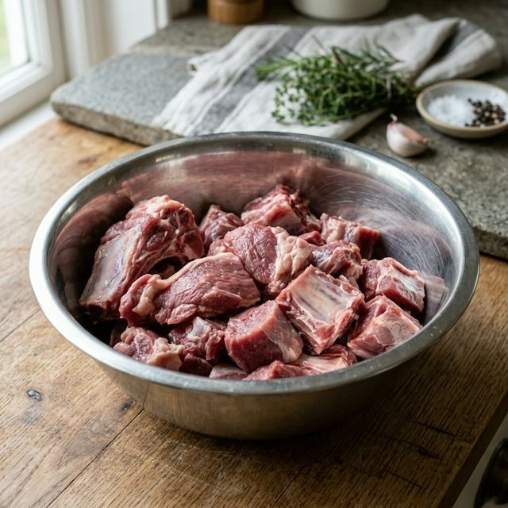
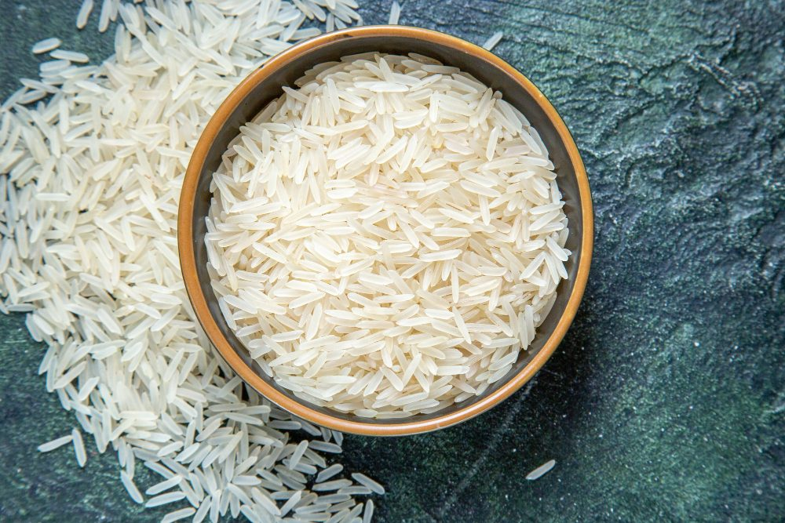
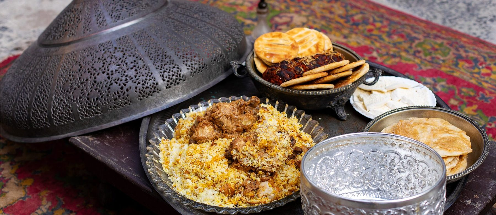
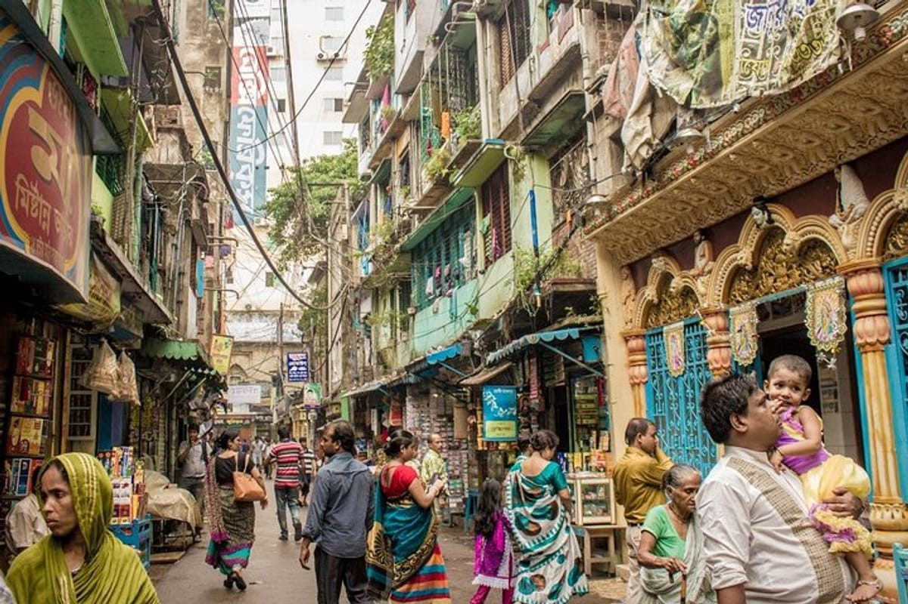

The Dish
Raw meat, partly cooked rice and one sealed pot: the choice that gives kacchi its name.
“Kacchi” means raw
Uncooked meat and partly boiled rice go into one pot together and finish cooking side by side.

Kacchi
Marinated raw meat at the bottom, rice on top. Both cook together in the sealed pot.
Pakki
The meat is cooked first, then layered with rice. Easier to control, but a different dish.

A dish for the days that matter
Weddings
Kacchi is the expected main course at Bangladeshi wedding feasts, and a family’s choice of cook is a point of pride.
Eid and gatherings
The shared platter and the aroma that fills the house turn a meal into an event.
Old Dhaka
The old city’s kitchens made the dish famous, and its biryani houses still draw crowds.

The recipe changes, the method stays
Every family and biryani house in Old Dhaka has its own spice balance. The core is shared: marinated meat, rice, potato, whole spices and dum cooking.
Food knowledge becomes heritage when people keep practicing it and sharing it.